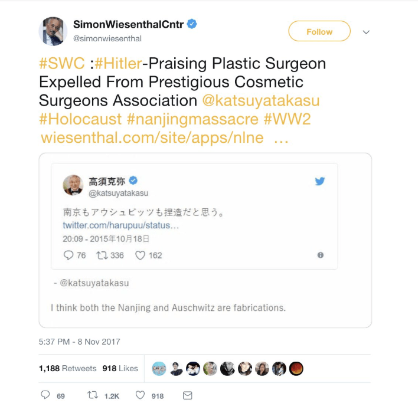
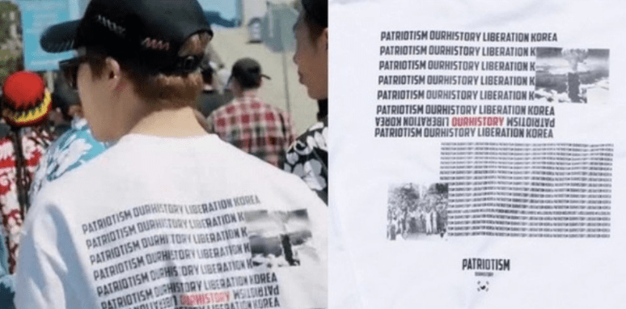
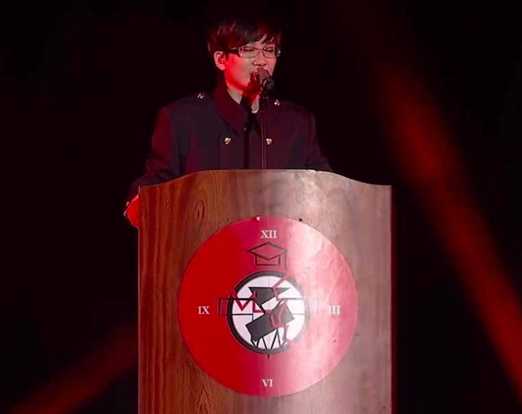
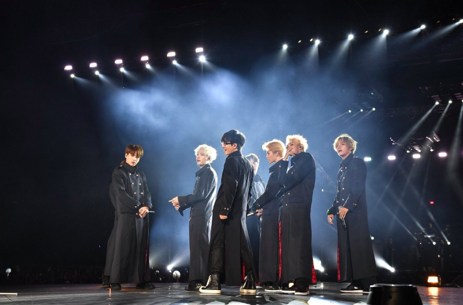
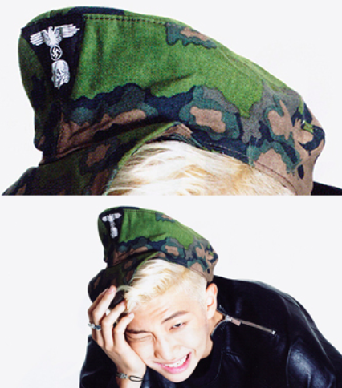
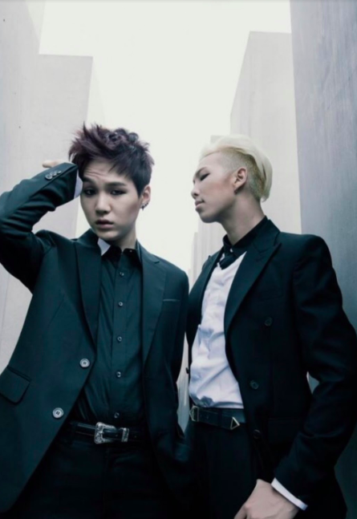
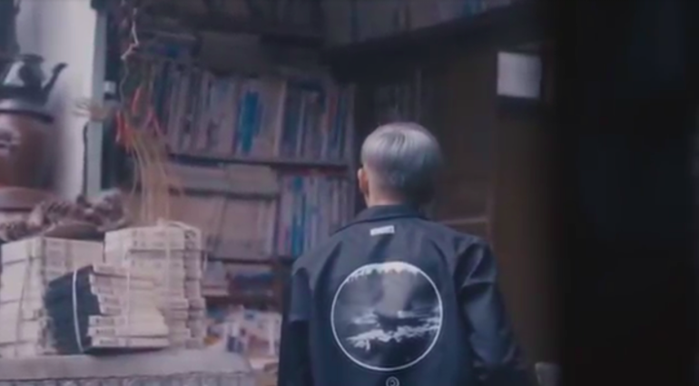
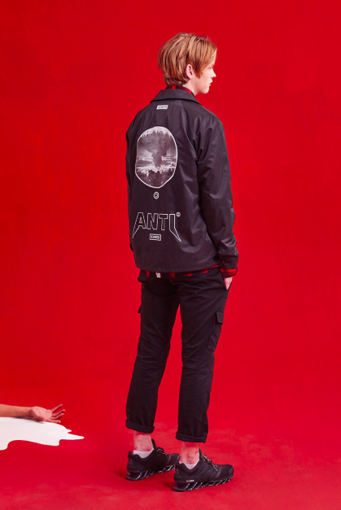

2. Overview of Recent Events
2-2. Investigation of Claims
In this section, we will outline each criticism leveraged against BTS during the controversy in question. This includes the denunciation of the group for the wearing of the offending T-shirt, as well as additional accusations of historical insensitivity from the Simon Wiesenthal Center.
We will then attempt to provide contextual information for each issue in the aim of giving readers a more nuanced understanding of these controversies.
The Simon Weisenthal Center Statement
On the afternoon of November 11 (EST), the Simon Wiesenthal Center (SWC) released a press statement which expanded the scale of the controversy considerably. (SWC, 2018 [20]). In a statement titled “Popular Korean Band Whose Japan Performance Was Cancelled For T-Shirt Mocking A-Bomb Victims, Once Posed With Nazi SS Death Head Symbols, Flew Nazi-Like Flags At Concert,” the associate dean of the center, Rabbi Abraham Cooper, stated, “…wearing a T-shirt in Japan mocking the victims of the Nagasaki A-bomb, is just the latest incident of this band mocking the past.” Referencing a hat with a historically Nazi-linked symbol a BTS member was seen wearing during a 2014 photoshoot, he stated that “the result [from wearing the hat] is that… young generations in Korea and around the world are more likely to identify bigotry and intolerance as being ‘cool’ and help erase the lessons of history… those designing and promoting this group’s career are too comfortable with denigrating the memory of the past” (SWC, 2018 [20]).
The Center further claimed that the group waved flags at a concert that “were eerily similar to the Nazi swastika” and demanded that they owed “the people of Japan and the victims of the Nazism an apology,” directly citing a video thread with Japanese captions found on Twitter (SWC, 2018 [20]). This video thread had been uploaded by a Japanese Twitter account by the name of “TAro”, which was created in November 2018 and deactivated soon after the scandal faded from the international media landscape. Before it disappeared, “TAro” was following a total of nine other Twitter accounts, one of which belonged to Katsuya Takasu – a plastic surgeon, Nazi sympathizer, and denier of the Nanjing Massacre who the SWC made it their mission Update: April 7, 2019. It came to our attention that the organization has since removed the statement from its website. The link will direct you to the archived page. to see removed from the American Academy of Cosmetic Surgeons in 2017 (SWC, 2017 [21]).
Screenshot by author.
After the SWC released this statement, many international media outlets, including ABS-CBN (ABS-CBN, 2018 [1]), The Sun (du Cann, 2018 [5]), The Korea Times (Lee, 2018 [11]), and The Guardian (McCurry, 2018 [15]), picked up the story and circulated the SWC’s list of accusations against BTS. However, these accusations were circulated without regard for their factual accuracy and in the absence of a more nuanced understanding of contemporary Korean-Japanese relations, a central contextual ground on which this controversy developed. In the following, we examine the factual accuracies of each of the accusations that have been made against the group over the course of this scandal and reflect on how these accusations have been received and reported on by the general media. Both BTS’ past choices and the media’s faulty reporting practices that we observe in detail below reveal how critical cultural sensitivity is for anyone that strives to successfully navigate global interactions today. We reflect on these lessons about cultural awareness at the end of this section.
The T-Shirt
Screenshot by author.
The T-shirt was worn by Jimin while filming the YouTube Premium series Burn the Stage in the summer of 2017. According to the designer Lee Kwang-jae, the shirt’s purpose was “to inform the younger generation [in Korea] of their history by incorporating it in streetwear…the inclusion of the atomic bomb image was never meant to mock victims, but rather to show the timing of the independence of Korea” (Lew, 2018 [12]). The group’s agency, Big Hit Entertainment, released an official statement after the media storm, stating that “the outfit had not been designed originally to injure [hurt] or make light of those affected by the use of nuclear weapons,” and that the wearing of the T-shirt was “in no way intentional.” The company went on to apologize for “failing to take the precautions that could have prevented the wearing of such clothing by our artist” (Big Hit, 2018 [2]). Representatives of the agency also visited the Korea Atomic Bomb Victim Association at Hapcheon, South Korea, as well as the Japanese Atomic Bomb Victims Association (Nihon Hibakusha) in Japan to personally deliver an apology and hear the victims’ voices and perspective on the matter of moving forward together (Shin, 2018 [19]).
The Flags
The performance with the flags was not at a BTS concert; it was at Seo Taiji’s 25th anniversary concert in September 2017. Just like BTS is well known for their socially conscious music, Seo Taiji is widely acclaimed to be the pioneer of producing music that criticizes governmental and social issues (Chang, 2017[4]). At the concert, BTS performed the 1995 megahit “Gyosil Idea (Classroom Idea),” dressed in school uniforms, and waved red flags as Seo Taiji sang behind a lectern with a logo. The costumes were not military uniforms but a creative interpretation of school uniform. It is a specific rendition of がくらん (gakuran), Japanese school uniform, which many Korean students wore until the 70s. Many creative elements were utilized to create a strikingly dark and oppressive atmosphere on stage with a clearly stated purpose to effectively deliver the overall message of the song (Herman, 2017 [9]). “Classroom Idea” is a harsh and explicit criticism of South Korea’s hierarchical and oppressive education system of the 1990s that exposes the society’s pressure placed on youth to perform well academically through its lyrics (Mitchell, 2002 [17]). The original 1995 stage – the blueprint performance that became the basis of the 2017 performance featuring BTS – resonated deeply with millions of Korean youth in the 1990s as it utilized effective visual and creative elements on stage to deliver a powerful satire and commentary on the suppression of students’ freedom in school (Mendez, 2017 [16]).
The symbol on the red flag bears integrated images of a clock, a school, and school uniforms, like the ones BTS and Seo wore, in a white circular logo with a red background. The only similarity between this flag and the swastika flag used by the Nazi regime is the red background and white circle located in the center of the flag. Additionally, far from glorifying Nazism, Seo’s message in the song and performance is clear: to expose all systems that suppress human freedom and fight for liberation.
It should also be noted that falsely comparing any red, black, and white logo to the swastika without sufficient evidence does great disservice to the important goal of preserving the history of the Holocaust. Jonathan Greenblatt, the national director of the Anti-Defamation League, has explicitly stated that “misplaced comparisons trivialize this unique tragedy in human history” (Malloy, 2017 [14]).
The Hat
In October 2014, the Korean magazine CeCí published photos of BTS under the title “Boy, Turn Up the Music” as part of the magazine’s 20th anniversary celebration issue. It was in this project that BTS’ leader, RM, was photographed with a hat with a German Schutzstaffel (SS) symbol. The hat faced criticism among international fans of the group; yet, CeCí has not issued any statement to this day.
In response to the statement from the SWC that “members of the band posed for a photo shoot wearing hats with the Nazi SS Death Head logo” however, it should be noted that the overall photo shoot was in no way themed around the hat or Nazism. As mentioned, the photo spread was to celebrate the 20th anniversary of the magazine. All other photos of the band, including those with RM, do not feature the hat or any form of Nazi iconography.
Following the recent accusations, the photoshoot stylist Kim Wook, who is listed as the owner of the hat in the magazine, gave a phone interview in which he said, “It was not my own hat…nor was the hat one of their personal accessories. If I had to guess, I’d say that we just ended up using a product that happened to be in the studio at the time.” (Hong, 2018 [10]) While Big Hit’s official statement clarified these circumstances and their intentions, they fully accepted responsibility in “failing to strictly review the clothing and accessories [their] artists were made to wear,” and offered their “sincere apologies for inadvertently inflicting pain and distress to anyone affected by totalitarian regimes in the past… as well as to anyone who may have experienced distress and discomfort by witnessing an association of [BTS] with imagery reminiscent of political extremism” (Big Hit, 2018 [2]).
The Photoshoot
Though not directly included by the Simon Wiesenthal Center in its statement, older images of BTS have emerged from a photoshoot at the Memorial for the Murdered Jews of Europe in Berlin. These images were taken during the summer of 2014 and were planned to be released as part of a photobook in early 2015. After preview images of the shoot were released, fans quickly identified the location and contacted Big Hit to explain the significance of the memorial in question. In response, Big Hit took down all of the related tweets and did not publish the photos in the photobook.
It is also worthwhile to note the contentious discourse surrounding the memorial itself, as there have been heavy criticisms that question the efficacy of the memorial in fulfilling its purpose to encourage solemn remembrance of Jewish victims. Amid criticisms that the site is too ambiguous and does not feature a sign that explains its intention of being a memorial (Brody, 2012 [3]), German artist Shahak Shapira has created art pieces that expose how the memorial site has commonly been relegated as a backdrop for tourist photography (Oltermann, 2017 [18]). In response to such wary criticisms, the memorial’s architect, Peter Eisenman, has commented that “[p]eople are going to picnic in the field. Children will play tag in the field. There will be fashion models modeling there and films will be shot there. I can easily imagine some spy shoot ’em ups ending in the field. What can I say? It’s not a sacred place” (Hawley, 2005 [7]). These criticisms, of course, do not make holding a photoshoot there acceptable, and Big Hit did remove all photos from that site on all of its social media.
The Jacket
Another controversial picture that accused BTS of cultural insensitivity surfaced over the course of the scandal’s development showing a member of the group wearing a jacket with an image of a mushroom cloud. During BTS’ 2015 “Hwa Yang Yeon Hwa” concert, a VCR film depicted RM dressed in a jacket with a mushroom cloud on the back. Due to the nature of VCRs (footage shown during concerts), the garment went unnoticed until this year. There was no apology from the group or Big Hit Entertainment regarding this specific item of clothing, and the scene is still included in the footage.
This jacket was from the 2015 Autumn/Winter collection of the Korean fashion brand ANTIMATTER, titled “SCARED.” The lookbook described the collection as “killing basic human instinctive fears such as the crushing defeat, the brutal war, the savage beast, the heartless god and the inevitable death” (Fox, 2015 [6]). As explained in Section 3-1-2, the picture of RM in the jacket was used by some Japanese media outlets – mostly right-wing ones – to show that BTS, and by extension, Big Hit, had always been callous towards atomic bomb victims. It should be noted that the brief clip only shows the top half of the jacket, not the bottom half that has the word “ANTI” written in big block letters. According to the description of the collection, the jacket is meant to portray an anti-fear of war sentiment.
A Closing Note: Reflecting on the Importance of Cultural Awareness
The series of incidents we have examined above raise a heavy question about the importance of cultural sensitivity in our increasingly globalizing world. As past choices from BTS and Big Hit came under international scrutiny, Big Hit recognized its failure to make every decision with acute cultural awareness and apologized to those whom the management inadvertently hurt as a result.
On the other hand, we saw proliferation of misinformed accusations primarily rooted in cultural insensitivity when the SWC and international media hastily labeled a wholly unique and unrelated stage performance “Nazi” without sufficient cultural and historical context. The unfortunate and disturbing blunders that we observed from all parties above raise a universal alarm and emphasize, again, the importance of cultural awareness for participants in a global world. It also shows that there is much space for everyone to learn and grow as we strive to become more aware of unfamiliar histories and cultures.
This gap in historical and cultural education is a general and widespread problem. Cultures and histories of distant geographic origins are often systematically not taught, as they ideally should be to local populations. Across many locations in East Asia, where the influence of the unique tragedy of the Holocaust has not had a strong impact on the region’s culture, there has been heavy criticism that the education system fails to properly address tragedies pertaining to the Holocaust with due and appropriate emphasis.
Compounded by a lack of education on the Holocaust and the lack of emphasis on its historical significance, there is a noticeable ambivalence in the memory of the Holocaust in some Asian countries. Fashion trends that appropriate Nazi-like uniforms referred to as “Nazi chic,” or “swastikawaii” in Japan, have swept through Cambodia, China, Indonesia, Thailand, Japan, and other countries (Hay, 2015 [8]). Outlets like TIME have reported on the fascination with Nazi paraphernalia and Adolf Hitler in countries like South Korea, Japan, China, and especially Thailand, where there are pubs named after Hitler and teenagers dress in Nazi-inspired clothing (MacIntyre, 2000 [13]).
On the other hand, this lack of cultural competency regarding the Holocaust in East Asia can be compared to the Western public’s considerable lack of awareness on the sheer scale and weight of Japanese imperialism in modern Asian history, as well as the level of wartime atrocities that occurred in the Pacific theater of the WWII.
Vastly unaware of this distant side of world history, many Western brands and the general public see no problem in fashioning the symbol of the Japanese rising sun flag, which, to many Asian countries that had once been colonized by Japan, represents a Japanese empire inseparable with the history of its brutal war crimes. Much like casual appropriation of the swastika, normalization of the rising sun flag symbol inflicts deep offense and pain to the victims of the Japanese imperial mission; but the general Western audience is usually unaware of that side of history, as Japanese imperialism had limited effects on their societies and cultures.
Moving forward, it would be productive to reflect on these realistic grounds and limitations that shape different region’s experience of cultural navigation. Squarely facing the reality and recognizing one’s mistake is the first step to improvement. Big Hit, for its part, has pledged to “carefully examine and review not only these issues but all activities involving Big Hit and our artists based on a firm understanding of diverse social, historical and cultural considerations to ensure that we never cause any injury pain or distress to anyone” (Big Hit, 2018 [2]). The SWC has yet to acknowledge or correct its misinformed accusation regarding the flag, which itself has revealed the center’s own lack of regard for cultural understanding about a unique artistic product.